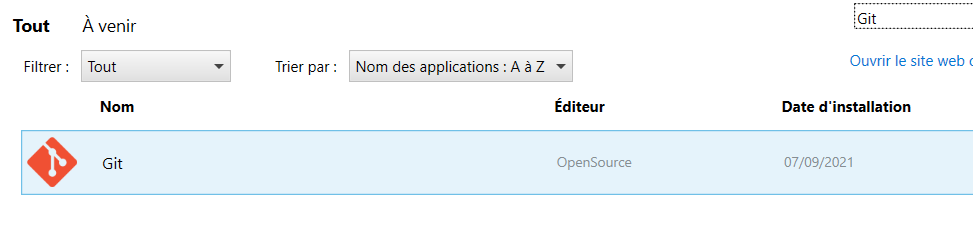
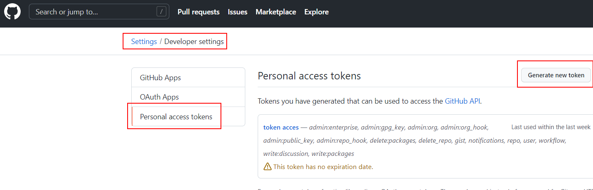
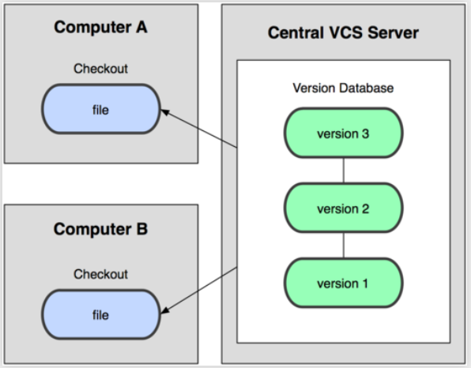

Formation Git
A propos de moi
Stephen NunesExpert technique Junior
Installation
Git sur Centre logiciel (Peut mettre du temps à s'actualiser)

Sinon : Téléchargement de Git
https://git-scm.com/downloads
üé®
üé®
Settings -> Developer settings -> Personal access tokens -> Generate new token -> Check all -> Generate token
 Le Personal Access Token sera à utiliser à la place de votre mot de passe lors du 'push'
üé®
Introduction
üé§
Decentralisé
Un dépôt local Git contient une copie complète du repository distant dans le dossier caché .git. C'est à dire, qu'en local, il est contenu les fichiers et dossiers et tout l'historique des changements fait sur ceux-ci​
Un dépôt local SVN ne contient que les métadatas des fichiers, le reste est stocké sur le serveur distant.​
Centralisé (SVN, TFVC, etc)
Décentralisé (Git)
Dépôt local
Un dossier sur votre ordinateur qui contient
- Le dossier .git qui contient toute la configuration du repository git (historique des changements, etc)
- Vos fichiers et dossiers de code, documentation, etc
Les 3 zones de Git
- Répertoire de travail (Working directory)
- Zone de transit (Staging area)
- Dépôt local (Repository)
- Répertoire de travail : Où se trouve vos fichiers/dossiers de code, documentation
- Zone de transit : Où se trouve les fichiers que vous vous apprétez à commit
- Dépôt local : L'historique de chaque changements (commit)

| Add | Ajouter des fichiers du Working directory au Staging area |
| Commit | Valider la modifications des fichiers et les transférer du Staging area au Repository local |
| Checkout | Appliquer les modifications du Repository local dans le Working directory |
Branches
Pour chaque nouvelles fonctionnalités ou correction de bug, une branche est créée puis fusionnée à la branche principale, à la différence de SVN où une seule branche principale est utilisée.​
Git basics
La documentation 1
git help
git {command} --help
git config --help
üé®
La documentation 2
git config -l
üé®
git config --global user.name "Stephen NUNES"
git config --global user.email monadressmail@domaine.com
üé®
git config --global color.ui.auto
üé®
Configurer Git 1
git config --global http.sslVerify false
üé®
Configurer Git 2
ls -al ~/.ssh
Si erreur, c'est que le dossier n'existe pas, le créer
mkdir ~/.ssh
üé®
Configurer Git 3
ssh-keygen -t rsa -b 4096 -C "monaddressemail@domaine.com"
üé®
Configurer Git 4
cat ~/.ssh/id_rsa.pub
Sur Github : Settings -> SSH and GPG keys
üé®
git clone https://github.com/StephenNunes/FormationGit
üé®
start chrome "...\Formation Git\Slides\index.html"
üé®
mkdir test
cd test
git init
git init --help
üé®
rm -R .git/
üé®
touch README.md
üé®
Statut d'un Repository
A chaque modification ajout / suppression, le repository local possède un état propre
git status
üé®
Indexation 1
Chaque changement (modification, ajout, suppression) d'un fichier doit être indexé par Git.
git add {fileName}
git add README.md
# Ajouter tous les fichiers et dossiers avec leurs sous-fichiers et sous-dossiers
git add .
git status
Les fichiers sont alors à l'état staged dans le Staging area
üé®
Indexation 2
Il est possible de desindexer un fichier
git reset {fileName}
git reset newFolder/test1.txt
git status
üé®
Indexation 3
Pour la suppression d'un fichier et indéxer cette suppression
git rm -qf {fileName}
git rm -qf README.md
git status
üé®
Indexation 4
Pour déplacer un fichier du staging area
git mv {currentPath} {newPath}
touch test1.txt
mkdir newFolder
git add test1.txt
git mv ./test1.txt newFolder/test1.txt
git status
üé®
Commits 1
Une fois les modifications staged, il est possible de les commit. Le repository local est alors modifié.
git commit
# Vi est ouvert dans la console, "i" pour écrire, ":wq" pour sauvegarder et quitter
git commit -m "feat: Initial Commit"
üé®
Commits 2
A chaque commits est associé un idenfiant unique (hash, ou sha1). Il est visible lors de la création d'un commit et dans l'historique.
git log
git log --pretty=oneline --abbrev-commit
üé®
Commits 3
Un commit est un √©tat stable de l'application, v√©rifier que √ßa compile, √ßa ne mange pas de pain üòÄCommits 4
Faites des commits, faites en beaucoup, leur description n'en sera que plus véritable si les commit sont des changements atomiquesRemotes 1
Pour collaborer avec notre équipe nous avons besoin d’un référentiel commun sur lequel partager nos ressources.
Un remote.
Création d'un repository sur Github pour faire office de dépôt remote
üé®
Remotes 2
# Ajouter un remote
git remote add {remoteName} {remoteAdress}
# Lister les remotes
git remote -v
# Supprimer un remote
git remote rm {remoteName}
git remote add origin https://github.com/StephenNunes/test
git remote rm origin
üé®
Push
Une fois que l'on est satisfait des différents commits locaux, il est alors temps de les pousser sur le repository distant
git push {remoteName} {branchName}
git push origin master
üé®
Pull
Pour récupérer et merger un repôt distant
git pull {remoteName} {branchName}
git pull origin master
git pull # Current branch
üé®
Stash
Lorsque l'on souhaite "mettre de côté" un travail en cours en local, inachevé
git stash # Mets de côté le travail en cours
git stash pop # Récupère le travail dernièrement remisé
git stash list # List tous les "états sauvegardés"
üé®
Reset
Revenir à l'état de la branche remote
git reset HEAD {remoteName}/{branchName}
git reset HEAD origin/master
git reset --hard origin/master
üé®
Advanced Git
Branches 1
Dans ce cas là, la solution aurai été de créer une nouvelle branche afin de pouvoir mettre de côté l'ensemble des commits correspondant à la feature.
# New branch
git checkout -b {branchName}
git checkout -b myFeature
# Retourner sur la branch master
git checkout master
üé®
Branches 2
Chaque projet decidera du nombre de branches / de la manière de gérer ses features, on appelle ça le workflow Git du projet. En général, master correspond aux versions stables de l'application, develop est la version sur laquelle l'équipe travaille. Chaque feature peut être une branche à part.Branches 3
La commande checkout permet également de se déplacer vers un commit (sha1) voir un tag.
git checkout {hashDeCommit}
üé®
Branches 4
Pour obtenir la liste des différentes branches du repository local / distant et les différences
# Liste des branches locales
git branch
# Liste des branches locales avec HEAD commit
git branch -vv
# Liste des branches locales et remote avec HEAD commit
git branch -av
üé®
Branches 5
Pour supprimer une branche du repository local
git branch -d {branchName}
git checkout master
git branch -d myFeature
# Il faut être sur une autre branch que la branche actuelle
üé®
Branches 6
Récupérer en local les branches du remote et les lier aux branches du remote
git fetch -all
git checkout {branchName}
üé®
Différences 1
Mise en place d'un fichier à comparer
git checkout master
touch newfile.txt
vim newfile.txt # Add a line
git add .
git commit -m "Add new file"
git checkout -b "branchWithNewFile"
vim newfile.txt # Add another line
git add .
git commit -m "File modified"
git diff {branch1}..{branch2}
git diff branchWithNewFile..master
üé®
Différences 2
Comparer 2 branches
git diff {branch1}..{branch2}
git diff myFeature..master
üé®
Différences 3
Configurer un outil externe de comparaison de fichiers
git config --global --add diff.guitool winmerge
git config --global --add difftool.winmerge.path "/c/Program\\ Files\\ \\(x86\\)/WinMerge/WinMergeU.exe"
git config --global --add difftool.winmerge.trustExitCode false
vim ~/.gitconfig
Ouvrir le fichier .gitconfig pour ajouter manuellement la ligne cmd
cmd = "/c/Program\\ Files\\ \\(x86\\)/WinMerge/WinMergeU.exe" -e -wl -u -dl \"Local\" -dr \"Remote\" \"$LOCAL\" \"$REMOTE\"
üé®
Différences 4
Utiliser l'outil externe de comparaison de fichiers
git difftool {branch1}..{branch2}
git difftool myFeature..master
üé®
Merge 1
On peut merger des modifications d'une autre branche sur la branche courante.
git merge {branchNameWhereModificationsGot}
git merge master
Aura pour conséquence de ramener toutes les modifications présente sur master sur la branche courante.
üé®
Merge 2
Merge Fast-forward ou no fast-forwardUn merge fast-forward est un merge classique comme exécuté auparavant

Merge 3
Un merge no fast-forward est un merge qui crée un commit de merge, afin degarder l'historique de la branche une fois mergée
Merge 4
Merge no fast-forward
git merge --no-ff {branchNameWhereModificationsGot}
git merge --no-ff master
üé®
Merge 5
Je recommande dans la majorité des cas d'utiliser un merge no fast forward pour facilité la compréhension de l'historique Sur Git bash, le merge no fast-foward est configuré par défautConflits 1
La plupart du temps, lors d'un merge, Git sait reconnaitre quels sont les fichiers modifiés et permet un auto-merging des fichiers. Dans le cas contraire, l'opération est stoppée le temps que les conflits soient résolus.Conflits 2
Les fichiers présentant un conflit que Git ne sait pas résoudre automatiquement, sont modifiés par Git et il est impératif de résoudre l'intégralité des conflits soi-même avant de pouvoir continuer.
<<<<<<< HEAD:index.html
// code modifié sur la branche locale
=======
// code modifié sur la branche qui est fusionné
>>>>>>> remoteBranch:index.html
Conflits 3
Attention aux différents outils réalisant des merges conflicts automatiquement. (IntelliJ...)Conflits 4
Configurer un outil externe de gestion de conflits
git config --global --add merge.tool winmerge
git config --global --add mergetool.winmerge.path "/c/Program\\ Files\\ \\(x86\\)/WinMerge/WinMergeU.exe"
git config --global --add mergetool.winmerge.trustExitCode false
vim ~/.gitconfig
Ouvrir le fichier .gitconfig pour ajouter manuellement la ligne cmd
cmd = "/c/Program\\ Files\\ \\(x86\\)/WinMerge/WinMergeU.exe" -e -wl -u -dl \"Local\" -dr \"Remote\" \"$LOCAL\" \"$REMOTE\" \"$MERGED\"
üé®
Conflits 5
Création d'une situation de conflit
git checkout master
touch fileInConflict.txt
vim fileInConflict.txt # Add 2 lines
git add .
git commit -m "added file"
git checkout -b branchWithConflict
vim fileInConflict.txt # Modifier une ligne du fichier dans la nouvelle branche
git add .
git commit -m "modify one line of file"
git checkout master
vim fileInConflict.txt # Modifier la même ligne que modifié précédement
git add .
git commit -m "modify the same line"
git merge branchWithConflict
üé®
Conflits 6
Un conflit va être créé, pour le résoudre avec WinMerge, lancez cette commande
git mergetool
üé®
Conflits 7
Une fois le conflit résolu dans WinMerge, vous pouvez ajouter le fichier et le commit
git add .
git commit -m "fix conflict"
üé®
Rebase 1
Merge est différent du Rebase. Exemple de Rebase :
Rebase 2
Il est parfois utile, de ne pas souhaiter de commits de merge superflus lorsque l'on souhaite ramener une feature sur master.Rebase 3
On a réalisé une mauvaise manip, et on souhaite littéralement réécrire l'historique de Git.Rebase 4
On souhaite squash (compresser) les différents commits réalisés sur notre branche de developpement en un seul commit avant de valider la feature.Rebase 5
Ne jamais rebase des commits qui ont déjà été poussés sur un repo distant.
git push -f
Merge vs Rebase
Rebase permet de ré-écrire l'historique des commit, par conséquent je ne le conseille pas au que dans des cas très particuliers comme le squash de commit d'un featurePréférez le Merge no fast forwardpour intégrer le code d'une branche dans une autre en gardant un historique le plus authentique possible
Cherry-pick
Récupère les modifications présentes sur un commit d'une autre branche sur la branch actuelle, et applique ces modifications
git cherry-pick {sha1}
üé®
Blame 1
Connaître qui a modifié chaque ligne dans un fichier
mkdir blameTest
cd blameTest/
git clone https://kevzettler@bitbucket.org/kevzettler/git-blame-example.git
üé®
Blame 2
Blame ne fonctionne que sur les fichiers
git blame README.md
üé®
.gitignore 1
Ignorer des fichiers pour ne pas les stage/commit dans votre dépôtCréation de fichiers .gitignore
üé®
.gitignore 2
Créer un .gitingore pour Java
touch fichier.class
git status
Fichier *.class ignoré
üé®
Git Flow
Sources
Git flow documentationGit flow cheat sheet
Git Flow 1
Afin de garder une certaine cohérence dans le nom des branches pour s'y retrouver, il faut définir un workflow de branchesGit Flow 2
Workflow Git le plus utilisé et qui convient à la plupart des besoins : Git FlowTypes de branches dans Git flow 1
- master : Branche principale unique, contient une version stable et publiée de l'application
- develop : Branche unique source de toutes les nouvelles fonctionnalités
Types de branches dans Git flow 2
- feature/ : Branches créées pour chaque nouvelle fonctionnalité ayant pour source la branche develop ou d'autres branches feature/ au besoin
- release/ : Branches créées pour la réalisation de tests de validation et donc de correction de bugs exclusivement après développements de fonctionnalités et avant de publier une version fixé de l'application. A pour source la branch develop et pour destination la branche master
Types de branches dans Git flow 3
- hotfix/ : Branches créées pour la réalisation de correction de bug sur des versions déjà publiées (c'est-à-dire en production). A pour source la branche master et pour destination la branche master
- (Facultative) support/ : Branches utilisées uniquement s'il faut gérer plusieurs versions sur plusieurs instances de production. A pour source la branche master et pas de destination. Les branches hotfix/ prennent leur source des branches support//
Types de branches dans Git flow 4
- bugfix/ : Branches créées pour la réalisation de correction de bug sur des versions qui sont en train d'être validées (branche release/)

Exemple de branches Git flow
- feature/Policies
- release/4.0.2.3
- hotfix/WebScreen
Manipulation de Git Flow 1
Git flow est-il installé ?
git flow
üé®
Manipulation de Git Flow 2
Documentation
git flow help
git flow {branchName} help
git flow feature help
git flow feature start --help
üé®
Manipulation de Git Flow 3
Initié un projet Git Flow
git checkout master
git checkout -b develop
git flow init
Créer la branche master et develop, puis initier git flow
üé®
Manipulation de Git Flow 4
Création d'une branch feature/
git flow feature start {branchName}
git flow feature start "screenEC784"
Crée la branche feature/screenEC784 depuis la branche develop
üé®
Manipulation de Git Flow 5
Création d'une branch feature/ à partir d'une autre branche feature/
git flow feature start {branchNameToCreate} {branchNameSource}
git flow feature start "testWebApi" "feature/screenEC784"
Crée la branche feature/testWebApi depuis la branche feature/screenEC784
üé®
Manipulation de Git Flow 6
Terminer une branche feature/ et la merger dans la branche develop ou la branche feature/ sourceL'option --no-ff permet de faire un merge no fast-forward
git flow feature finish --no-ff {branchName}
git flow feature finish --no-ff "databaseConnection"
L'option --no-ff permet ici de faire un merge no fast-forward, donc de créer un commit de mergeMerge la branche feature/databaseConnection dans develop et supprime la branche feature/databaseConnection
üé®
Manipulation de Git Flow 6
Terminer une branche feature/ en spécifiant ou la merger
git flow feature finish --no-ff {branchNameToFinish} {sourceBranchName}
git flow feature finish --no-ff "testWebApi" "feature/screenEC784"
L'option --no-ff permet ici de faire un merge no fast-forward, donc de créer un commit de merge.Merge la branche feature/databaseConnection dans develop et supprime la branche feature/databaseConnection
üé®
Manipulation de Git Flow 7
Création d'une branch release/ depuis develop
git flow release start {branchName}
git flow release start "6.12.0.0"
Crée la branche release/6.12.0.0 depuis la branche develop
üé®
Manipulation de Git Flow 8
Terminer une branch release/
git flow release finish {branchName}
git flow release finish "6.12.0.0"
Merge la branche release/6.12.0.0 dans la branche master et dans la branche developet supprime la branche release/6.12.0.0
Cela ouvre Vi et demande un tag
üé®
Manipulation de Git Flow 9
Création de branche support/
git flow support start {branchName} {sourceBranchName}
git flow support start "6.2" "master"
{sourceBranchName} est obligatoire
Crée la branche support/6.2 depuis la branche master
üé®
Manipulation de Git Flow 10
Création de branche hotfix/ depuis une branche support/
git flow hotfix start {branchName} {sourceBranchName}
git flow hotfix start "bugWebScreen" "support/6.2"
Crée la branche hotfix/bugWebScreen depuis la branche support/6.2
üé®
Manipulation de Git Flow 11
Terminer et merger une branche hotfix/ dans sa branche support/ source
git flow hotfix finish {branchName} -T {tagHotFixsourceBranchName}
git flow hotfix finish "bugWebScreen" -T "6.2.0.1"
Merge la branche hotfix/bugWebScreen dans la branche support/6.2 avec le tag 6.2.0.1
La branche hotfix/bugWebScreen est supprimée
Ici l'option --no-ff n'est pas nécessaire car le merge d'une branche hotfix/ sera no fast forward par défaut
üé®
Git Flow
Git flow permet de définir une structure de branches et de s'abtraire des commandes de merge/rebase.Cela facilite l'utilisation de Git.